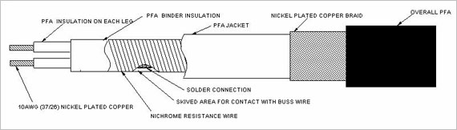

| FACTORY TESTS |
| |
| 1. Factory terminated heaters will be tested by energizing at design voltage and checked for
proper heating prior to shipment. |
| |
| 2. All heaters will be spark tested to 5000 volt AC RMS dry spark test. |
| |
|  |
| |
| Constant Watt Heating Cable for Third Rail Applications |
Constant Wattage Heating Cables are ideally
suited for applications where watt density is
required at all times. The heater element consists
of a nichrome wire wrapped around, parallel
insulated buss wires. At specific intervals, a
short section of insulation is removed from
alternating buss wires to create connection nodes
for the nichrome wire.
The nichrome wire is
soldered to the buss conductors, creating a
network of parallel resistors along the entire
length of constant wattage cable. They can be
designed to operate at specified voltages between
120- 800 Volts AC/DC. Constant watt cables are |
|
an ideal choice for higher temperature
applications where high watt densities are
required. The PFA jacket and Nickel plated
Copper braid provides additional protection for
use in corrosive and hazardous areas.
Constant watt cables maintain their integrity in
temperatures up to 482°F (250°C), and can be
exposed to intermittent temperatures of 500°F
(260°C) maximum. The heating zones of
constant watt cables create an extremely rugged
heat source that can withstand thermal shock and
movement. |
|
| |
| Features: |
ㆍFlexible
ㆍSuperior Thermal Aging Characteristics
ㆍUniform Heat Output
ㆍNot subjected to In rush Current |
|
ㆍLower Energy Costs
ㆍChemically Inert
ㆍOutstanding Weathering Properties
ㆍResists flame ignition and flame spread |
|
| |
| Construction Details: |
ㆍConductors : 2 x 10AWG Stranded Nickel Plated Copper
ㆍInsulation: Fluoropolymer (PFA)
ㆍPair Binder: Fluoropolymer (PFA)
ㆍHeating Element: Nichrome resistance wire
ㆍInner Jacket: Fluoropolymer (PFA)
ㆍShield: Nickel Plated Copper Braid
ㆍOverall Jacket: Fluoropolymer (PFA) |
| |
| Performance Ratings: |
ㆍTemperature Ratings: 482°F( 250°C) Maximum continuos exposure temperature
ㆍTemperature Ratings: 500°F(260°C ) Intermittent exposure
ㆍApplied Voltage : 600-800 Volts DC (as required)
ㆍWatt Densities : 30-40 Watts per foot (as required) |
| |
| Competitive Products: |
| Self-Regulating |
Self-regulating cables are constructed of a semi-conductive layer extruded between parallel buss wires.
As temperatures increase, the semi-conductive layer’s resistance increases which lowers the output
wattage. Conversely, as the temperature decreases, the resistance decreases and the cable produces more
heat. A self-regulating cable adjusts its output to respond to temperatures all along its length.
Watt density and sheath temperature limitations of self-regulating heating cables require that two cables be
joined side-by-side to achieve the high watt requirements above 30 watts/ft. |
| Power-Limiting Heating Cable |
| Power-limiting cable utilizes a coiled resistor alloy heating element to generate the watt densities required.
The coiled alloy heating element has a power-limiting feature, where the element responds to an increase in
ambient temperatures by increasing the resistance of the alloy heating element. This increase in electrical
resistance, referred to as PTC (Positive Temperature Coefficient), reduces the path for electrical current
thereby reducing the power output of the cable. The PTC feature allows the cable to maintain lower sheath
temperatures, which prevents the heating element from overheating. |
| |
| Limitations of Self Regulating and Power-Limiting Heating Cables |
| In-Rush Current |
Self-regulating and Power-Limiting cables are known as “active resistors”. They have a very low
resistance when un-powered. When voltage is applied to the cable, the resistance rises rapidly as
heat is generated, becoming fairly stable in about two minutes. During this period of time the
current can be many times higher than the stable current. This in-rush current can degrade the
resistance materials and insulation systems causing premature cable failures. |
| Heat -Aging |
While self-regulating heating cables are capable of producing sufficient heat when new, inspection
of installed circuits show significant drops in heat output over time. This reduction in output is
attributable to a breakdown in the electrical connection between the extruded semi-conductive
carbon matrix heating element and the bus wires supplying the power.
This condition, is referred to as “heat aging,” and results in heat output levels diminishing to the
point that in many cases snow and ice removal cannot be achieved. |
| |
| Cost Considerations / Energy Savings |
Constant watt heating cables do not require a continuos operating voltage to be applied, unless
the system requests heat.
※ While the Self-Regulating and Power-limiting cables must have a continuous voltage
source to operate properly. |
| |
Constant watt heating cables are designed to limit the effect of the heat aging process
※ Replacement costs of self regulating and Power limiting cable due to heat aging can be
expected |
| |
| Conclusion |
| Constant wattage heating cable is a proven, reliable solution for industrial process temperature maintenance
and freeze protection. Producing a uniform thermal output over its entire length. By using a single power
point, you can easily configure and install a heating system. The cable is flexible at most ambient
temperatures. It is easy to monitor and maintain temperatures and experiences zero in-rush current at startup.
With a 482°F (250°C) fluoropolymer electrical insulation and jacket material it has outstanding
electrical and thermal properties and is well suited for most chemically hostile environments. |